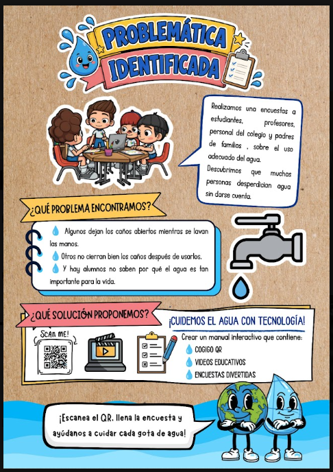
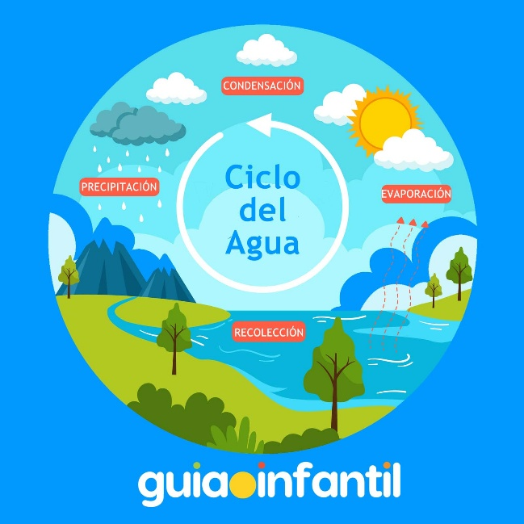
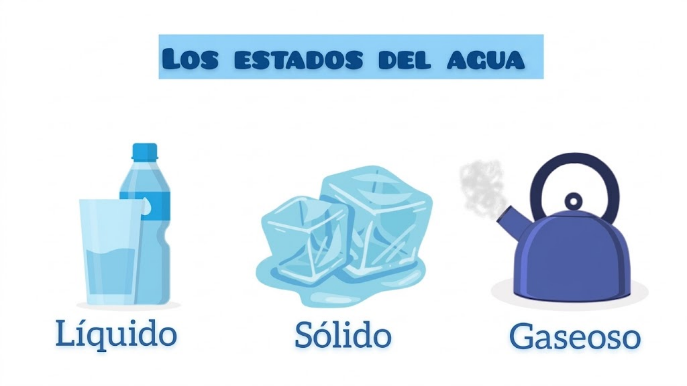

¡Cuidemos el Agua! 💧
Manual interactivo creado por estudiantes de Innova Schools para aprender a cuidar cada gota de agua
Descubrimos problemas con el uso del agua en nuestro colegio

¿Qué problema encontramos?
- Algunos dejan los caños abiertos mientras se lavan las manos
- Otros no cierran bien los caños después de usarlos
- Hay alumnos que no saben por qué el agua es tan importante para la vida
¿Qué solución proponemos?
- Crear un manual interactivo con código QR
- Videos educativos sobre el cuidado del agua
- Encuestas divertidas para crear conciencia
- Juegos para aprender jugando
Datos increíbles sobre el agua en nuestro planeta

La mayor parte del agua del planeta está en los océanos y no se puede beber
Y de ese 3%, el 70% está congelada en los glaciares y los polos
Solo una pequeñísima parte del agua la podemos usar los seres humanos
Es el Día Mundial del Agua. ¡Todos debemos celebrarlo cuidando cada gota!
El agua viaja por todo el planeta en un ciclo que nunca se detiene

El ciclo del agua tiene 4 etapas: Evaporación, Condensación, Precipitación y Recolección
Evaporación
El sol calienta el agua de ríos, lagos y océanos, y la convierte en vapor que sube al cielo
Condensación
El vapor de agua se enfría y forma las nubes en el cielo
Precipitación
Las nubes se llenan de agua y cae como lluvia, nieve o granizo
Recolección
El agua se junta de nuevo en ríos, lagos y océanos, ¡y el ciclo empieza otra vez!
El agua puede cambiar de forma según la temperatura

Líquido
Es el agua que bebemos, con la que nos bañamos y regamos las plantas. ¡La forma más común!
Sólido
Cuando el agua se congela se convierte en hielo. Esto pasa cuando hace mucho frío
Gaseoso
Cuando calentamos el agua, se convierte en vapor. ¡Como cuando hierve la tetera!
6 cosas fáciles que puedes hacer todos los días
🚿 Cierra el caño
Siempre cierra el caño mientras te enjabonas las manos. ¡No dejes correr el agua!
👀 Revisa las fugas
Si ves un caño goteando, avisa a un profesor o al personal del colegio
🥤 Usa tu botella
Lleva tu propia botella de agua reutilizable y evita desperdiciar
🌱 Riega con cuidado
Si riegas las plantas del colegio, usa solo el agua necesaria
📢 Comparte el mensaje
Recuérdale a tus compañeros la importancia de cuidar el agua
🚽 Tira la basura al tacho
No arrojes residuos al inodoro o desagüe. Usa siempre el tacho de basura
El agua se puede usar más de una vez si somos inteligentes

El agua de la ducha, lavabo y fregadero se puede almacenar, tratar y reutilizar para riego, limpieza y más
Así ha sido el consumo de agua en nuestro colegio
📈 Consumo de agua en m³ - Meses del año
La tecnología nos ayuda a usar el agua de manera inteligente
Códigos QR
Escanea y accede a información sobre el cuidado del agua desde tu celular
Videos Educativos
Aprende de forma divertida con videos que te enseñan a cuidar cada gota
Encuestas Digitales
Comparte tu opinión sobre cómo se usa el agua en tu colegio
Juegos Interactivos
Aprende jugando con trivia, sopa de letras y más actividades divertidas
Página Web
¡Esta misma página! Un manual digital que puedes ver desde cualquier dispositivo
Sensores de Agua
Dispositivos que detectan fugas y ayudan a ahorrar agua automáticamente
Todos podemos ayudar
Cada pequeña acción cuenta. Si todos cuidamos el agua, haremos una gran diferencia para nuestro planeta
La educación es clave
Aprender sobre el agua nos ayuda a tomar mejores decisiones. ¡Comparte lo que aprendiste con tu familia!
El futuro está en nuestras manos
La tecnología y la creatividad nos dan herramientas para cuidar el agua y proteger las futuras generaciones

¡Juntos cuidamos cada gota! 💧